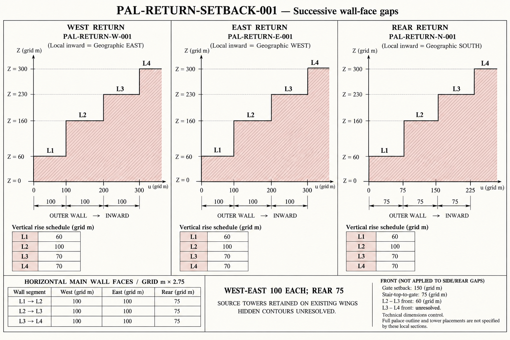
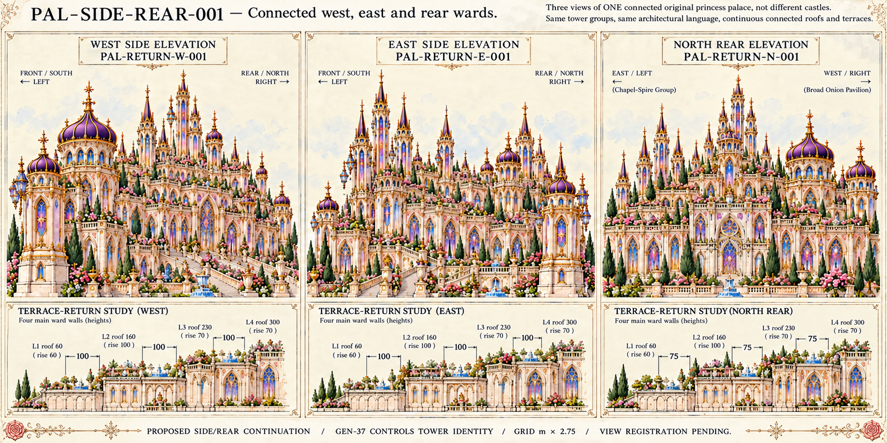

Successive main-wall gaps:100 grid m each side,75 rear. Hidden contours and appearance views remain proposals. Open one image at a time.
Dimensions and source use · Offsets and prompts · Original front master
Three local sections ascend from outer-left to inward-right, with correct100/100/100 side and75/75/75 rear labels and roofs60/160/230/300. Dimensions govern; diagram pixel scales are schematic, not a registered whole footprint.

West/east appearance insets carry100/100/100 labels; rear carries75/75/75 after text correction. Rear orientation shows eastern spires left and western broad pavilion right. Actual tower depths, rear glazing choices and exact wing contours remain proposed; elevations are not a registered shared 3D projection.
